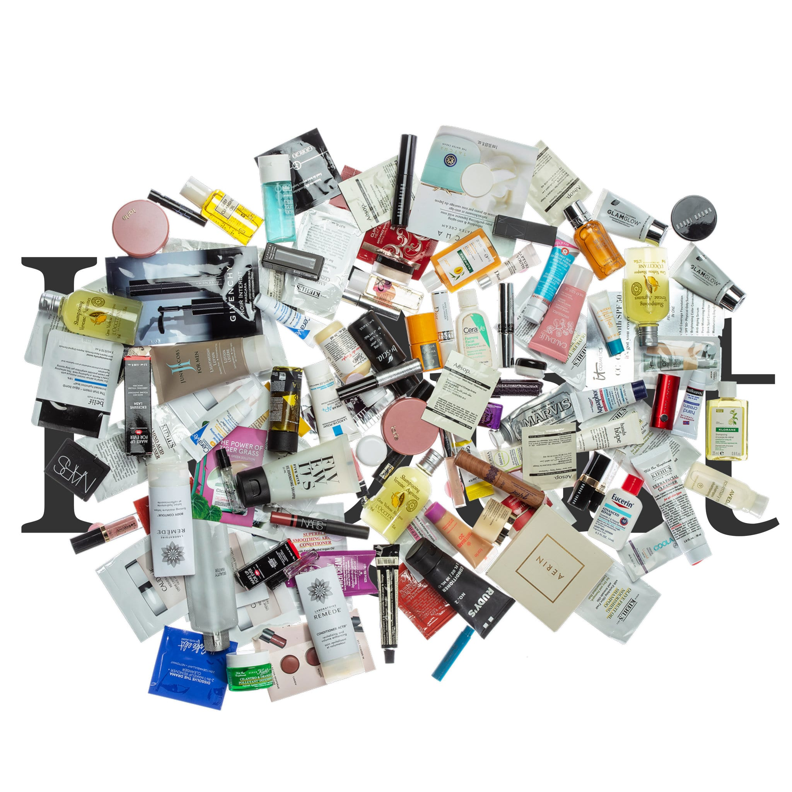

Growing up, I never had any problems with my skin. I wouldn’t even wear sunscreen most times, only reluctantly putting it on after much hassle and arguments with my mother. I would use body wash to wash my face, and pitied anyone with skin issues. Skin was never something I had to worry about, or even thought about worrying about. Of course, I had a few sun spots because of a lack of sun protection; however, aside from a few dots on my face, it was clear and healthy.
This would all change in 9th grade when pimples started erupting all over my face. This was a first for me. I thought they would go away in a few days, but when one disappeared, another two would appear. These pimples transformed into acne, and this acne became one of my biggest enemies starting in Freshman year. No matter what type of face wash, moisturizer, toner, or serum I used, the acne was persistent, just as persistent as my burning defiance against sunscreen. My mother would always express a sense of pride when not wearing sunscreen finally came back to bite me. I started heeding all her warnings, and I started following everything she told me to do on my skin. However, my acne got the last laugh. Those annoying little red spots would not disappear, no matter how much effort I poured into them or how much I tried to ignore them.
Slowly, people started wondering what happened to my face, and my skin became just one more thing to add to the list of things I was self-conscious about in school. The feeling of not knowing what to do, trying things and having them fail, hearing comments online saying that this product completely saved their lives, and trying it only to find out it was indeed not a lifesaver. My skin took up all my time, became the only thing I began to worry about. The countless hours researching skin products, envying those with clear skin, remembering how much you took all this for granted. Those emotions don’t appear until everything doesn’t go the way you expected.
However much of a curse my skin had become, it became just as much of a companion. No matter how much I hated how my skin was, I couldn’t change anything anymore, and the only way it would improve was through my love, care, and persistence, just like what my mother tried to show me years back. Over my high school years, my skin has gotten better, and I have understood the importance of sunscreen, albeit it took me a while. I can’t say I hate my skin. Without the acne’s warning signs, I would have never started being more vigilant about ensuring my pillow was clean, making sure my hair is not wet when going to bed, and of course, putting on sunscreen.
Everyone has a problem, a problem that acts as a sign of growth, maturity, and understanding that the routines, habits, and beliefs you had in your youth would not always apply later on in your life. A problem that is unique to them, a battle they themselves have to face. For me, that problem was skin, but for others, it could be health, exercise, and other issues that I would have never expected until they happened to me. Ironically, the problem that I so carefully scrutinized, observed obsessively over in the mirror, is something that nobody around me studied as carefully as I did. Those little imperfections didn’t hurt my identity; they only complemented my uniqueness.
The scars left from my journey are not something to be hidden away, but to show the journey I persevered through and the lessons I learned along the way. I’ve grown in ways I could never have imagined during the period my skin changed, and I’ve learned lessons, good habits, and complexity that I would never have experienced if not through the inconveniences of my skin. Looking back, my skin was never my enemy. It was my teacher. Something that taught me patience, care, and attentiveness. Those spots that I did everything in my power to get rid of eventually faded, but they left with me lessons that I will bring with me to my next journey, and next “problem.”
Support
Resources & Support
If this story resonated with you or reflects challenges you may be experiencing, the following organizations provide support and helpful resources.
Broad Shoulders Initiative is not a crisis service, medical provider, or therapy provider. If support feels urgent, please contact emergency services, a trusted adult, a school counselor, or a licensed professional.